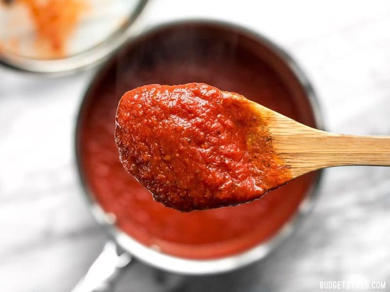

Pizza Sauce
Home

Description
Ingredients
- 2 Tbsp olive oil
- 1 clove garlic, minced
- 1 28oz. can crushed tomatoes
- 1 6oz. can tomato paste
- 1/2 Tbsp sugar
- 3/4 tsp salt
- 1 tsp dried basil
- 1/2 tsp dried oregano
- Freshly cracked black pepper
- 1 pinch crushed red pepper (optional)
Steps
- Add the olive oil and garlic to a sauce pot and cook over medium heat for 1-2 minutes, or just until the garlic is soft and fragrant.
- Add the crushed tomatoes, tomato paste, sugar, salt, basil, oregano, some freshly cracked pepper (10-15 cranks of a pepper mill), and a pinch of red pepper flakes. Stir to combine.
- Cover the pot, allow the pot to come to a simmer, then reduce the heat to low, and let simmer for 15 minutes minimum, or up to 30 minutes (I often let it simmer as I prepare my pizza dough).